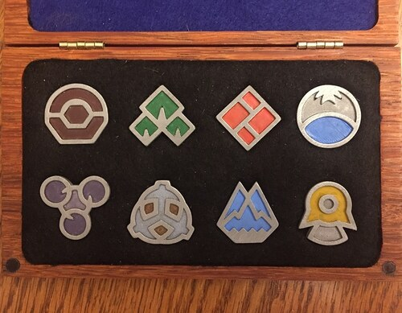

The World of Pokémon
Pokémon are wonderous creatures that can be caught in Pokéballs. People who catch pokémon are called Trainers. Trainers will mostly use their pokémon to fight with other trainers. In each game, you are a young trainer, brand-new to the training scene. Each generation of Pokémon games takes place in a specific region of the Pokémon world with its own collection of specific pokémon.
Each region also has a Pokémon professor, who introduces you as the main character to being a pokémon trainer and will give you a starter pokémon. They will also give you a pokédex, an electronic encyclopedia of pokémon, and ask you to fill it out. As you catch and evolve specific pokémon, the corresponding pokédex entry will be filled in.
You also have the option to participate in the Pokémon League. With some exceptions, each region has a total of 8 pokémon gyms, designed to test your abilities as a pokémon trainer. After beating a gym, you obtain that gym's badge. After getting all 8 badges from the gyms, you can then enter Victory Road and challenge the Pokémon League, which consist of a group of powerful trainers called the Elite Four, and the region's champion, who is the strongest of all. After beating the champion, you are proclaimed the champion and have beaten the game.
